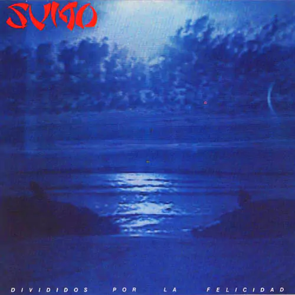
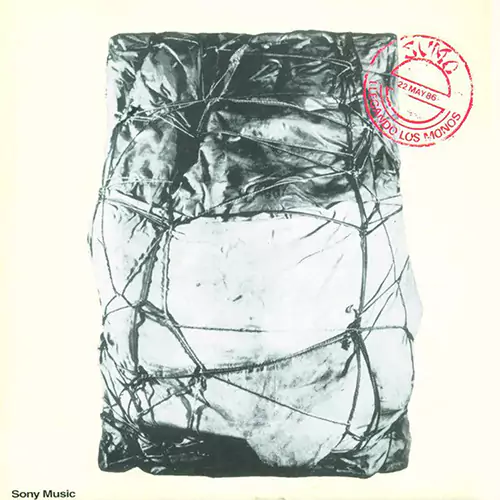
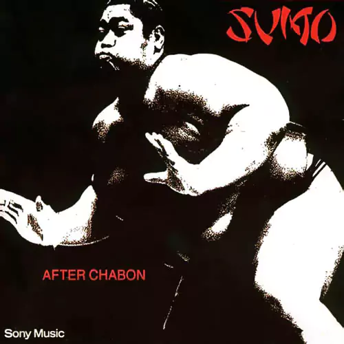
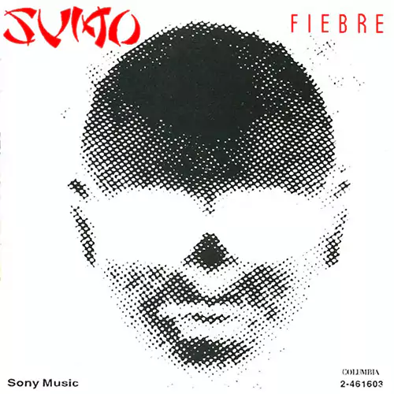
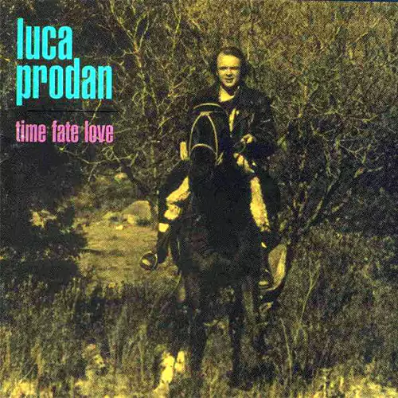
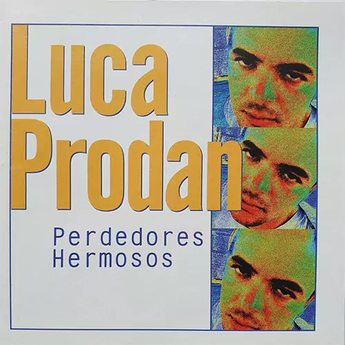

.luca-not-dead
landing
history
sumo
discography
gallery
discography
Corpiños en la madrugada
1983

Divididos por la felicidad
1985

Llegando los monos
1986

After chabon
1987

Fiebre
1989

Time fate love
1996 - Compilation

Perdedores hermosos
1997 - Compilation